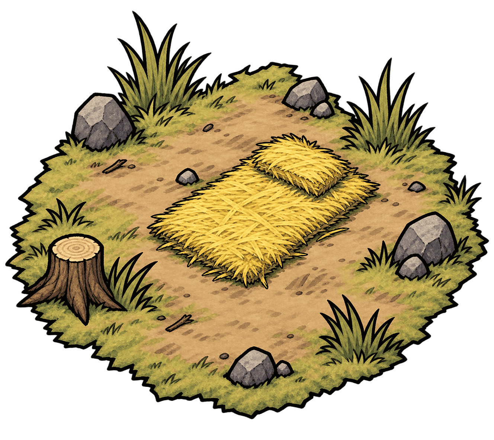

ABOUT
昨日はベッドでちゃんと寝たはずなのに。
目を覚ますと、そこは知らない場所だった。
見渡す限りの草原。
少し離れたところには森や岩場。
見覚えのない植物に、妙な生き物。
いったい、何が起こっているのだろう。
どうしてここにいるのか。
ここがどこなのか。
そもそも、どうやって来たのか。
何ひとつ思い出せない。
もしかして、自分は死んでしまったのだろうか。
……いや。
たぶん、まだ生きている。
少なくとも、このまま何もしなければお腹が空く。
食べられそうなものを探して、
使えそうなものを拾って、
夜を越せる場所を作る。
そして、この世界のどこかには、
ここから出るための何かがあると思う。
たぶん。
たぶんね。
Still Alive,,,Probably
できること。

探索する
周囲の世界を探索できます。
探索すると木材や石材、食糧などの資源を手に入れることができます。
ただし、探索するたびに1日が経過して空腹度が減少します。 さらに、危険な場所ではライフが減ることもあります。
遠くまで行きたい気持ちは分かるけど、帰れなくなったら困るものね。

食べる
食事ができます。
食糧を1消費して、空腹度を回復します。
回復量は拠点にある食堂のレベルによって増えていきます。
最高の調味料は空腹、っていうじゃない。

作る
拠点の下にあるボタンから、施設や装備を作ることができます。
探索で集めた木材や石材などの資源を消費して、拠点を発展させましょう。
食事を楽にしたり、探索を安全にしたり、できることも少しずつ増えていきます。
せっかく住むなら、少しくらい快適な方がいいよね。
そのほか
ゲームの目的
この世界を生き抜いて、脱出することが目的です。
どこかに、ここから出るための手がかりがあるかもしれません。
ゲームオーバー
ライフが0になるとゲームオーバーです。
お腹が空きすぎるとライフも減ってしまうので注意しましょう。
セーブについて
せーぶ？
何を抑えることかな？
※ セーブ機能はありません
あとは、やってみればだいたい分かります。
たぶん。